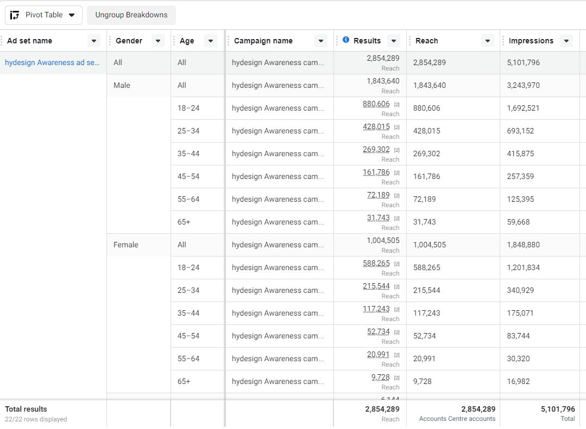
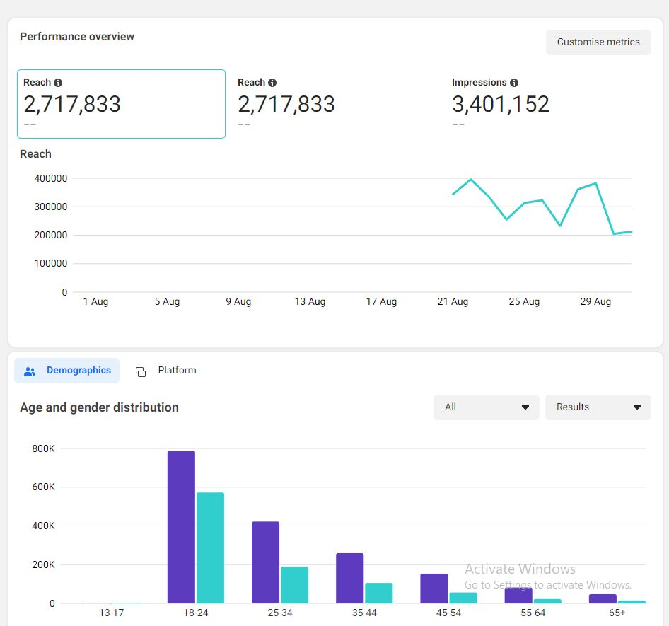
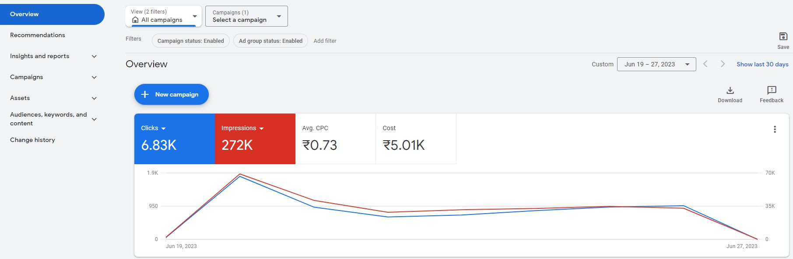
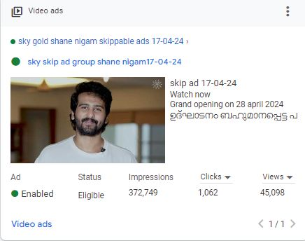
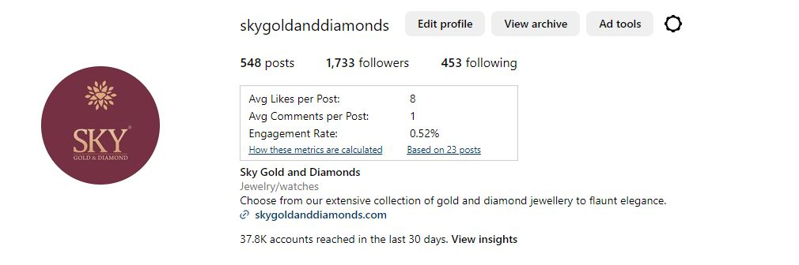
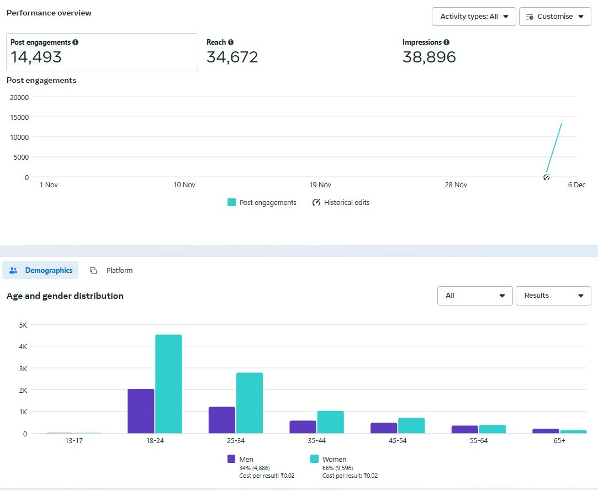
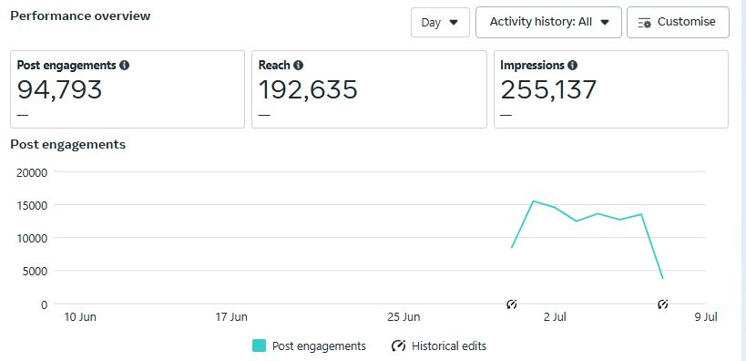

Turning ad spend into measurable growth.
I'm Rithin M, a Performance Marketer with 3.5 years of experience across Meta Ads, Google Ads, SMM, SEM and SEO. Currently building performance campaigns at Bloombiz Creatives.
What I work on
From campaign planning to reporting, I work across the full paid-media and digital marketing workflow.
Paid Performance
Meta Ads and Google Ads campaign planning, testing, targeting, budget optimization and KPI tracking.
Growth & Analytics
Use analytics and tracking to identify opportunities, improve conversion efficiency and make decisions from data.
Organic & Social
Social media strategy, content planning, SEO analysis, audience engagement and market research.
Selected work evidence
Campaign and analytics screenshots supplied in my portfolio document, presented as work evidence.







